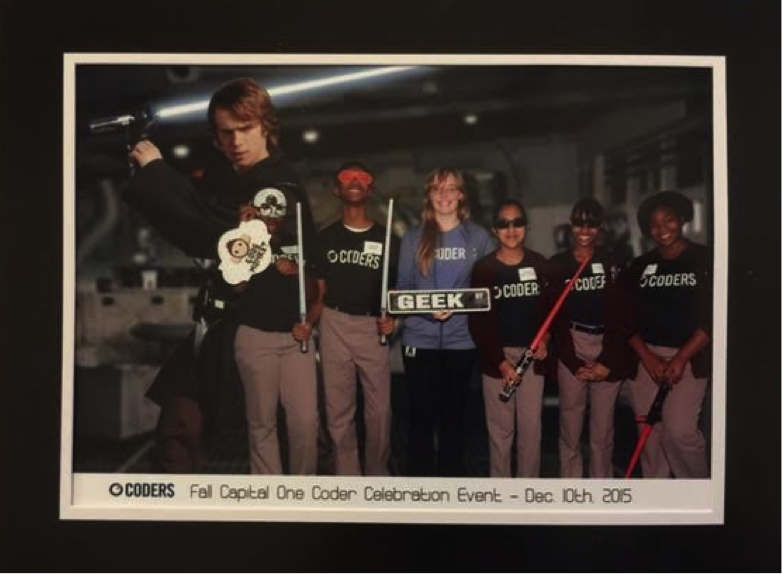

- Graduated May 2015
- Overall GPA 3.44/4.0
- Computer Engineering at UIUC was ranked 5th nationally by the U.S. News and World Report Rankings, published in September 2015. The current ranking for all engineering majors can be found here.

I am not a Robot
Take a regular picture and replace it with one that is constituted of a bunch of smaller pictures!
 Original Image
Original Image
 Images taken from /r/cats
Images taken from /r/cats
Code for this project is hosted on Github: https://github.com/melissacrawford396/CreateCollage
